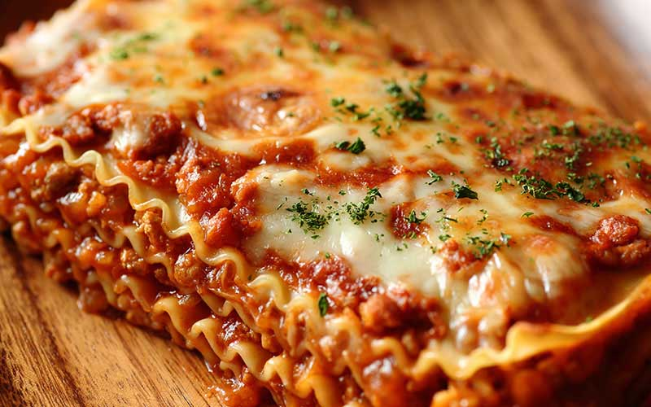

Traditional Lasagna

Garfield's Favourite Food
Lasagna is a wide, flat sheet of pasta.
The typical lasagna dish which is a dish made with several layers of lasagna sheets with sauce and other ingredients, such as meats and cheese, in between the lasagna noodles.
List of ingredients
- 1 pound ground beef
- 3/4 pound bulk pork sausage
- 3 cans (8 ounces each) tomato sauce
- 2 cans (6 ounces each) tomato paste
- 2 garlic cloves, minced
- 2 teaspoons sugar
- 1 teaspoon Italian seasoning
- 1/2 to 1 teaspoon salt
- 1/4 to 1/2 teaspoon pepper
- 3 large eggs
- 3 tablespoons minced fresh parsley
- 3 cups 4% small-curd cottage cheese
- 1 cup ricotta cheese
- 1/2 cup grated Parmesan cheese
- 9 lasagna noodles, cooked and drained
- 6 slices provolone cheese (about 6 ounces)
- 3 cups shredded part-skim mozzarella cheese, divided
Steps
- In a large skillet over medium heat, cook and crumble beef and sausage until no longer pink; drain. Add next 7 ingredients. Bring to a boil. Reduce heat; simmer, uncovered, 1 hour, stirring occasionally. Adjust seasoning with additional salt and pepper if desired.
- Meanwhile, in a large bowl, lightly beat eggs. Add parsley; stir in cottage cheese, ricotta and Parmesan cheese.
- Preheat oven to 375°. Spread 1 cup meat sauce in an ungreased 13x9-in. baking dish. Layer baking dish with 3 noodles, provolone cheese, 2 cups cottage cheese mixture, 1 cup mozzarella, 3 noodles, 2 cups meat sauce, remaining cottage cheese mixture and 1 cup mozzarella. Top with remaining noodles, meat sauce and mozzarella (dish will be full).
- Cover; bake 50 minutes. Uncover; bake until heated through, about 20 minutes. Let lasagna stand 15 minutes before cutting.